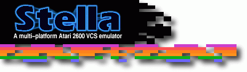

May 12, 2009
The Stella repository has now been fully converted to Subversion. All
developers currently using CVS should switch over to SVN immediately.
May 1, 2009
Stella release 2.7.7 for Linux, Mac OSX and Windows is now available.
Ports to other operating systems will be released as they become available.
- Corrected emulation of CPU opcodes involving 'decimal' mode (ADC/RRA
and SBC/ISB). Special thanks to SeaGtGruff and others on the Stella
mailing list for in-depth discussion and creation of test ROMs.
- Fixed bug in F4SC bankswitching mode; writes to bankswitch addresses
weren't triggering a bank switch.
- Changed internal sound frequency of Pitfall 2 from 15.75KHz to 20KHz,
as this sounds much more authentic when compared to a real cartridge.
Have Fun!
April 14, 2009
Stella release 2.7.6 for Linux, Mac OSX and Windows is now available.
Ports to other operating systems will be released as they become available.
- Added support for 'EF' bankswitching (Paul Slocum Homestar Runner),
as well as auto-detection of this format.
- Added support for 'EFSC' bankswitching, as well as auto-detection of
this format. This is similar to the 'EF' scheme, but also includes
128 bytes SuperChip RAM.
- Added autodetection for '0840' and 'SB' bankswitching formats.
- Improved autodetection for 'UA' bankswitching format.
- Fixed bug in selecting video modes larger than the current screen;
the resulting video mode will now be the largest one available
(previously it selected the smallest one available).
- The currently selected CPU register now displays its value in
decimal and binary (in addition to hex) in the debugger.
March 27, 2009
Stella release 2.7.5 for Linux, Mac OSX and Windows is now available.
Ports to other operating systems will be released as they become available.
- After about 2 years, finally fixed the infamous 'red screen' issue when
using ATI video cards in OpenGL mode in Windows. In the end, it was
determined to be a bug in the ATI drivers. Special thanks go to
Ant (http://aqfl.net) for bugtesting and
constant feedback wrt this bug.
- Fixed bug in TIA SCORE mode emulation when the Priority bit is also
set. This fixes a very noticable graphical glitch in 'Swordquest
Waterworld', as well as minor glitches in several other ROMs such
as 'Space Shuttle'.
- Treat spaces as normal characters in the ROM launcher. This means
that ROMs with spaces can be located with quick selection (ie,
typing characters will automatically jump to a ROM with that name,
and typing 'space' won't cause the launcher to jump back to the top
of the list).
- The debugger window can now have a minimum height of 620 lines
(previously the minimum was 690), but you lose access to the TIA 'RAM'
bytes when using this resolution. This should allow it to work
better on devices with small displays.
February 9, 2009
Stella release 2.7.3a for Windows is now available.
- Fixed minor issue in 2.7.3 with basedir.txt functionality; the
pathnames can now contain spaces.
February 9, 2009
Stella release 2.7.3 for Linux, Mac OSX and Windows is now available.
Ports to other operating systems will be released as they become available.
- Fixed rendering issues in software mode when using 24-bit colour depth.
This isn't as fast as 16 or 32-bit modes, so you're recommended to use
one of those whenever possible.
- For the Win32 port: re-added ability to change the default location
for storing Stella config files. To use this, simply create a file
named 'basedir.txt' in the application directory containing the full
path where all Stella-related items should be stored.
- Tweaked the TIA info statistics overlay to be smaller while still
including all relevant information.
January 27, 2009
Stella release 2.7.2 for Linux, Mac OSX and Windows is now available.
Ports to other operating systems will be released as they become available.
- Fixed major bug in ROM Audit functionality; renaming ROMs would create
files without an extension.
January 26, 2009
Stella release 2.7.1 for Linux, Mac OSX and Windows is now available.
Ports to other operating systems will be released as they become available.
- Partial workaround for sound not working in OpenGL video mode in
Windows with ATI video hardware. Sound will now work for the first ROM
selected, but not for subsequent ones (you will have to quit and
restart Stella for sound to work again). Related to this, added
'-audiofirst' commandline argument, which initializes audio before video
when emulating a ROM. Further work is required to completely fix
this bug.
- Fixed bug where volume wasn't being saved in 'Audio Settings' when
started from the ROM launcher.
- Fixed crash which sometimes occurred when viewing snapshots in the
ROM Info viewer.
- Allow setting window sizes for the ROM launcher and debugger to be larger
than your desktop resolution. Be careful with this feature, as switching
to fullscreen mode may cause problems in such cases.
- Made the ROM launcher filename filtering be case-insensitive. This fixes
a bug whereby ROMs with uppercase extensions were marked as invalid.
- Added a pattern matching textbox to the ROM launcher, used to
further filter the files shown in the listing. For now, this filters
files only (directories are not filtered, and are always shown).
- The location of EEPROM files used for AtariVox/Savekey emulation can
now be changed with the '-eepromdir' commandline argument as well as
in the UI.
- Added '-gl_aspectn' and '-gl_aspectp' commandline arguments (and
associated UI items), which replace the previous '-gl_aspect' setting.
The aspect modes can now be set separately for NTSC and PAL mode.
Related to this, the range of values is now 80 - 120.
- Fixed bug with hold-select/reset/button0 when overriding ROM properties;
the checkboxes in the UI weren't actually doing anything.
- The 'grabmouse' option is now configurable from the UI; previously
it was only accessible from the commandline or its shortcut key.
- Removed 'Emulation_HmoveBlanks' ROM property and associated UI item.
You can no longer optionally turn off HMOVE blanking; it is always
enabled when necessary.
January 19, 2009
Stella release 2.7 for Linux, Mac OSX and Windows is now available.
Ports to other operating systems will be released as they become available.
- Totally reworked the built-in UI to be font-sensitive and use higher-resolution
fonts. Stella now requires a minimum screen size of 640x480.
If used in a resolution smaller than that, the fonts will be reduced
accordingly. Related to this, switching between software and OpenGL
rendering now requires an application restart.
- Added three different sized fonts (small, medium, large) which can be
used in the ROM launcher.
- Added ability to temporarily override ROM properties from the UI. This
is tied to a right mouse button context menu in the ROM launcher, and
is very useful when you want to use a set of properties for all
subsequent ROMs without having to manually change each one.
- Added ability to filter the files shown in the ROM launcher. Currently,
the choices are 'all files', 'all roms', or 'roms ending with a certain
extension'. This functionality is tied to a right mouse button context
menu in the ROM launcher. Extensions can also be set with the
'-launcherexts' commandline argument.
- Added ability to reload the listing in the ROM launcher, either from
a right mouse button context menu or pressing the Control/Cmd-R key.
- Made the ROM info viewer in the ROM launcher configurable to show
snapshots in 1x or 2x mode.
- Made the delay between consecutive keys being recognized as one word
configurable in the ROM launcher. This is useful if you find that you
have to press keys too quickly to jump to a specific ROM. This can be
set in the UI or using the '-listdelay' commandline argument.
- Updated internal ROM properties database to ROM-Hunter version 4
(thanks go to RomHunter for his tireless research in this area).
- Expanded the statistics overlay for the TIA image to also show
Display Format and Bankswitch type information.
- Added '-ss1x' commandline argument and associated UI item, used to
generate snapshots in 1x mode, independent of the filtering/scaling
currently in use.
- Various path textboxes in the UI now recognize './' (or '.\') to mean
the current directory and '~/' (or '~\') to mean your home directory
(for Windows, home directory will be your 'My Documents' folder).
- Large speedup in loading directories with many files in the ROM launcher.
- Fixed reset issue in 3E, 4A50, AR, CV, E7, F4SC, F6SC, F8SC, FASC and MC
ROMs; the internal RAM wasn't being randomized after the initial reset.
- M6532/RIOT RAM is now randomized at every reset, not just when the
emulation starts.
- Fixed bug in _diff pseudo-registers in the debugger; they were actually
defined backwards.
- Added fix for 'Challenge/Surfers Delight' ROM; the startup bank was
incorrect. Combined with the new 'Override Properties' functionality,
you can now play both games directly from the UI (no need to use the
commandline).
- Fixed paddle issue with Activision Casino ROM; the last card in game 4
can now be reached.
- Added new pseudo-registers to the debugger, useful for conditional
breakpoints (_fcount, _cclocks, _vsync, _vblank).
- Added 'timing' commandline argument functionality to the UI, so you no
longer need to use the commandline to set it.
- Size restrictions on the TIA image are now strictly enforced. The
maximum height of a 1x TIA image is now 256 lines.
- Added a new setting to the 'fullres' option named 'auto'. Using
'auto' will let Stella decide the best videomode to use in fullscreen.
- Changed 'gl_fsmax' option to mean 'scale TIA image in fullscreen'. It
will have no effect on UI modes.
- Changed 'gl_aspect' option to range 80-100 (previously, it was 50-100).
- Removed 'ui_zoom' and 'tia_zoom' options, replacing them with
'tia_filter' (which can be zoom1x, zoom2x, etc). There is no equivalent
for ui_zoom, since the UI can no longer be scaled.
- Added experimental 64-bit version for Vista64 (may also work on WinXP64).
This hasn't been extensively tested, and is probably quite a bit slower
than the 32-bit version.
- OSX port now requires at least 10.3 and XCode 3.0 to compile. Sorry,
but I no longer have access to older systems to compile for 10.2.
- Huge updates to the documentation, particularly concerning the debugger.
Many features that have been in Stella for a while are now documented for
the first time.
May 23, 2008
Stella release 2.6.1 for Linux, Mac OSX and Windows is now available.
Ports to other operating systems will be released as they become available.
- Introduced more accurate timing for NTSC vs. PAL modes, where the
framerate is based on the number of scanlines per frame. This should
eliminate 'clicking' sounds when emulating ROMs that don't follow
the exact NTSC or PAL scanline specs.
- Added ability to see the current number of scanlines and corresponding
framerate to the TIA emulation. This can be set with the '-stats'
commandline argument, or dynamically turned on and off with the
'Alt-l' key combo.
- Modified '-framerate' commandline argument, where a non-zero value
overrides the automatic framerate calculation (based on number of
scanlines). Setting 'framerate' to zero re-enables auto-frame
calculation. Also, re-enabled changing the framerate from within the
UI.
- Added '-timing' commandline argument, which sets the type of waiting
between processing frames. Setting it to 'sleep' emulates the
previous behaviour in Stella; setting it to 'busy' emulates z26,
and can in some cases eliminate screen tearing (at the expense of
using all available CPU time).
- Fixed issue with debugger disassembly and mirrored $40 TIA write
addresses. They were actually defined at $30, and generating incorrect
labels.
- Fixed issue in AtariVox and SaveKey controllers where accessing the
EEPROM sometimes failed after the first write.
- Changed AtariVox and SaveKey EEPROM emulation to default to $FF for
a blank EEPROM.
- Fixed regression in cart auto-detection logic; some F6 ROMs were being
misdetected as E7.
- Fixed issue with M6532/RIOT timer initialization; it was causing some
ROMs to hang (most notably Summer Games). Related to this, reworked
the built-in random number generator to generate 'more random' numbers.
- Fixed bug in CommandMenu where console buttons (Select, Reset, etc)
weren't doing anything.
May 16, 2008
Stella release 2.6 for Linux, Mac OSX and Windows is now available.
Ports to other operating systems will be released as they become available.
- Added AtariVox support using a real AtariVox device, where Stella
sends data directly to the AtariVox. For now, this is supported in
Linux/UNIX, OSX, and Win32 only. You'll obviously need a real
AtariVox, and a serial<->USB adaptor to connect it to your system.
Added '-avoxport' commandline argument used to set the serial port
to which the AtariVox is connected. Special thanks to Al Yarusso
and Richard H. for providing sample hardware.
- Added AtariVox and SaveKey EEPROM emulation. This reads/writes data
to a 32KB file, not to the actual hardware. Very useful for testing
EEPROM support without actually wearing out the real device. Special
thanks to J. Payson for providing the EEPROM emulation code, and A.
Herbert for answering many driver-related questions.
- Added support for CX-22, CX-80, and AmigaMouse trackball controllers.
- Improved debugger symfile handling so that addresses accessed as
read-only won't use write-only labels (and vice-versa). More work
is still needed in this area.
- Added M6532/RIOT tab to the debugger. This will be expanded on in a
future release.
- Added TIA emulation fixes for graphical glitches in Escape from the
Mindmaster, Mission Survive, Solaris, and SWOOPS!
- Fixed bug where fullscreen OpenGL scaling wasn't working on 4:3 monitors.
- Further improvements to the M6532/RIOT emulation, which unfortunately
have broken old state files (again).
- Added deadzone setting, for adjusting the deadzone amount for
analog joysticks. This can be set using the commandline argument
'-joydeadzone' or dynamically within the UI.
- Make ROM disassembly in debugger take advantage of a wide window.
- Fixed bug in 6507 BCD handling introduced in the last release.
- For the Win32 port; Win9x should be fully supported again.
April 9, 2008
Stella release 2.5.1 for Linux, Mac OSX and Windows is now available.
Ports to other operating systems will be released as they become available.
- Fixed M6532 RIOT timer emulation. More testing is needed, but the
changes so far have fixed several ROMs that didn't work before.
- Fixed issue with weird characters in the debugger disassembly when
loading .lst files.
- Fixed bug where entering the debugger for 4A50 and E0 carts caused
the ROM to be frozen afterwords.
- Removed logic whereby starting a ROM from something other than the
built-in launcher wouldn't allow the user to go back to the ROM launcher.
- Fixed bug (hopefully) with the app icon not showing on the Stella window.
Further testing is needed, since I can't duplicate the error myself.
- Fixed default snapshot folder issues; the folder will now be
automatically created in the same place as state folders, ini files,
etc (whereever that may be for your platform).
- Re-added 'lastrom' functionality, where Stella will remember and
auto-select the last ROM that was successfully launched in the ROM
launcher.
- For Stella developers, fixed SpeakJet emulation so it compiles again.
No improvements have been made to the emulation itself, though.
March 28, 2008
Stella release 2.5 for Linux, Mac OSX and Windows is now available.
Ports to other operating systems will be released as they become available.
- Added RomInfo widget to the ROM launcher, which shows properties
information and a snapshot of the currently selected ROM. Updated the UI
and added '-romviewer' commandline argument to activate this setting.
Note that the ROM launcher will have to be sized at least 640x480 for this
to be used. Also note that the snapshots must be in 1x mode with a
maximum size of 320x260. This will be expanded on in a future release.
- Added ROM audit functionality, whereby ROMs can be physically renamed
according to their properties' name.
- Added bankswitching support for 0840, SB, X07 and 4A50. A special thanks
to Eckhard Stolberg for much help in this area.
- Removed "non-browse" functionality from the ROM launcher; it now always
uses browse/filesystem mode. The previous 'pretty' names can now be
seen by renaming all your ROMs with the new ROM audit feature.
- Huge overhaul of controller handling and Stelladaptor support, making it
much easier to add new controller types in a future release.
- Fixed paddle issues in Night Driver; paddle emulation speed should be
much better.
- Fixed several 6507 emulation bugs related to BCD handling.
- Updated ROM properties based on info from RomHunter.
- ROM properties can now be edited from the ROM launcher; you no longer
have to start a ROM to do so.
- Added support for configurable font to ROM launcher (currently only
'small' and 'large'). Updated the UI and added -launcherfont' commandline
argument to change this setting.
- Added SECAM, NTSC50, PAL60 and SECAM60 to the list of formats that can
be used. Also, switching between these modes with 'Ctrl-f' now switches
the palette only; the number of scanlines won't change.
- Fixed crash when switching between software and OpenGL mode with a
Stelladaptor plugged in.
- Added '-tiafloat' commandline argument, which determines whether or not
the TIA pins are in a 'floating' state. This is useful for testing on
certain CMOS EPROM chips where the unused TIA pins on a read are not
floating but pulled high.
- Fixed issue in debugger where once a .sym file was loaded, it was used
in all ROMs loaded after that.
- Fixed issue in debugger where equate names weren't showing up in the RAM
and CPU widgets. Note that this still isn't perfect, and needs support
from DASM for proper functionality.
- Updated state file format, creating smaller files (and in preparation
for state rewinding in a future release). Old state saves will no longer
work.
- Added '-bs' commandline argument, which is an alias for '-type' (which
is still present).
- Removed -pXspeed' commandline arguments, and replaced them with a
single '-pspeed'.
- Removed '-paddle' commandline argument. The paddle currently emulated
by the mouse can still be changed with Ctrl-0..3 or within the UI, but
the setting is no longer saved.
- Reworked UI for specifying that the console ports have been swapped,
hopefully making it easier to understand.
- Added 'Ctrl-c' & 'Ctrl-v' to EditTextWidgets, allowing to copy and paste
the text widget contents. More work in this area is coming in a future
release.
- Added 'Ctrl-leftarrow' and 'Ctrl-rightarrow' to EditTextWidgets, to move
to the first character of previous and next words (respectively).
- For the Win32 port: fixed OpenGL crashes in Vista. Graphical updates
are still slower in Vista compared to XP, though.
- For the Win32 port: default folder for Stella config files is now
'My Documents\Stella'; this can be disabled if necessary. This should
fix issues with losing settings when launching Stella from an IDE,
and the creation of stella.ini and 'state' directories in many
different places.
- For the Win32 port: several fixes to the Visual Studio project files,
allowing building in debug or release mode, for both i386 and x86_64.
The project files have been upgraded to Visual Studio 2008, and Stella
can now be built and distributed without the VS runtime libraries.
- Updated configure script for cross-compiling Win32 version in Linux.
September 18, 2007
Stella release 2.4.2 for Linux, Mac OSX and Windows is now available.
Ports to other operating systems will be released as they become available.
- Made usage of 'GL_TEXTURE_RECTANGLE_ARB' extension configurable, and
have it default to off. This should take care of the black/white
screen many people were experiencing with ATI video hardware. This
is accessible using the 'gl_texrect' commandline argument). Set it to
'true' or 'false' to enable/disable the extension.
August 27, 2007
Stella release 2.4.1 for Linux, Mac OSX and Windows is now available.
Ports to other operating systems will be released as they become available.
A partial list of features is:
- Re-added OpenGL aspect ratio setting ('gl_aspect' commandline argument).
- Re-added non-browser mode to the ROM launcher.
- For the Linux/UNIX port; fixed OpenGL vsync issue with Nvidia video cards.
August 20, 2007
Stella release 2.4 for Linux, Mac OSX and Windows is now available.
Ports to other operating systems will be released as they become available.
A partial list of features is:
- Added new video sub-system where fullscreen and windowed modes are treated
differently. Windowed modes now use '-zoom_tia' and '-zoom_ui' arguments,
while fullscreen modes can be specified by resolution using the new
'-fullres' argument.
- Widescreen video modes are now supported; Stella will simply center the
image with surrounding black borders.
- Many UI-related changes, including resizable ROM launcher and debugger
windows, and a new UI palette (the previous 'classic' palette is still
available). This is still a work in progress.
- The locations of all major config files (statedir, palette file,
cheat file, properties file, etc) are now configurable from the
commandline and within the UI.
- Updates to TIA palette support. Added SECAM support, and removed the
built-in 'original' palette. Standard, z26, and user are still
available.
- Various bugfixes to some debugger commands. The 'run' command no
longer causes a crash, and several others have better error-checking.
- Added more complete cartridge auto-detection for Commavid (CV), 3E,
3F and Activision (FE) formats.
- Removed XStart and Width ROM properties, since the forthcoming TIA
rework won't be using them.
- Reworked internal storage of ROM properties to be faster and take up
less space.
- Added several different ways of stretching the OpenGL image to the
'-gl_fsmax' argument, for more flexibility.
- Removed OpenGL aspect ratio setting favour of the previously mentioned
video changes. We'll see how this goes.
- Removed dirty-rect support from software rendering, since it was actually
sub-optimal in Windows and OSX and defaulted to off in previous versions.
- Added support for gzipped ROMs.
- Re-added pause support.
- Re-added support for Windows 98.
- Removed support for 'STELLA_BASEDIR' environment variable, since each
config file can be now configured separately.
- Removed '-fastscbios' argument, since it must always be turned on.
- Removed PSP support, since it hasn't been updated in over a year, and
someone else is maintaining another port elsewhere.
- For the Unix/Linux port; fixed 'make install' issues, and changed icon to
PNG format.
January 17, 2007
Stella release 2.3.5 for Linux, Mac OSX, Windows and GP2X is now available.
Ports to other operating systems will be released as they become available.
A partial list of features is:
- Greatly improved cartridge bankswitch type auto-detection. Stella
can now (mostly) autodetect cartridge types 'E0', 'E7', '3E', '3F' and
Superchip carts. Obviously, this autodetection is not infallible, but
relies on patterns in the ROM data, and how it was compiled. Because
of the auto-detection types already supported, almost all bankswitch
info was removed from internal ROM properties. Set the ROM property
"Cartridge.Type" to "Auto-detect" for this to take effect.
- Added auto-detection of display type (NTSC or PAL). Currently, PAL60
ROMs will be detected as NTSC. This is almost 100% accurate, and fails
in very few cases (for those that are mislabeled, the ROM properties
can be set specifically). Set the ROM property "Display.Format" to
"Auto-detect" for this to take effect.
- Improved emulation timing when exiting one ROM and starting another.
Previously, this could result in the second ROM having its sound start
later than it should have.
- Removed pause functionality from the core, since it's been superceded
by the other event states. You can now enter one of the menus for a
similar effect (options, command, debugger, etc).
- Added toggle for PAL color-loss emulation, which defaults to off.
Previous versions of Stella always used color-loss emulation.
Related to this, added 'colorloss' commandline argument.
- Added rudimentary support for configuring the UI palette ('uipalette'
commandline argument) and ability to change the size of the launcher window
('launchersize' commandline argument). This will be expanded on in future
releases.
- Reworked options menu so it's now accessible from the ROM launcher as
well as while playing a ROM.
- Re-added ability to change the width and height of a Console. Related to
this, changing XStart/YStart/Width/Height dynamically no longer resets
the ROM.
- Removed 'tiadefaults' commandline argument, since Stella will now default
to using accurate positioning, and not use 'tweaks'.
- Joystick code now allows all 4 directions; 'Bumper Bash' now works
correctly.
- Improved Keypad emulation; 'Alpha Beam with Ernie', 'Oscars Trash Race'
and 'Magicard' now work correctly.
- Reworked GUI code, so that all dialog boxes are automatically centered.
- Added 'rominfo' commandline argument, which prints some detailed info for
a ROM.
- For the OSX port; fixed crashes in OpenGL mode.
- For the GP2X port; some improvements to the sound code.
- For the GP2X port; added vertical centering of the TIA image (when possible).
December 22, 2006
Stella release 2.3 for Linux, Mac OSX, Windows and GP2X is now available.
Ports to other operating systems will be released as they become available.
A partial list of features is:
- Note: Because of the many changes in this release, all settings
will be reset to defaults. If this doesn't happen for you, it will be necessary
to manually delete your previous settings (see 'Settings' section of the manual
for more information).
- Potentially huge speedups in software rendering mode, both in emulation
and UI modes. Deactivating 'dirty rects' uses these new modes, which
can be 2-3 times faster for many configurations.
- For UI navigation, changed from using 'joymouse' to the more familiar
'tabbing' functionality, where you move from object to object by use of
some tab key. As a result, completely removed the 'joymouse' commandline
argument and all associated functionality.
- Added event remapping for UI events, separate from events while in emulation
mode.
- Added support for PAL60 ROMs, which use the PAL palette and resolution
but run at NTSC timing (60Hz). Added ROM property for this, and updated
the internal properties database for many PAL60 ROMs.
- Added support for user-definable palettes. For now, only one extra palette
is supported, but in the future we may have them specified per-ROM.
- Fixed bug in PAL colour-loss emulation, which wasn't actually being done
for the original Stella and z26 palettes.
- Fixed several TIA-related emulation bugs as reported on AtariAge. More
fixes will come with the TIA rewrite, due in the next release.
- Added new scaler infrastructure, replacing the '-zoom' commandline argument
with '-scale_ui' and '-scale_tia'. This means the UI and emulation can now
be scaled independently.
- Added '-gl_vsync' commandline argument and associated UI elements, which
uses synchronization to vertical blank interrupt in OpenGL on supported
systems. This eliminates tearing in OpenGL rendering.
- Changed naming of snapshots and state files. These files are now
named based on the names given in the properties database, and no longer
use the 'md5sum' name. As a result, state files from previous versions
will no longer work unless they're manually renamed. Related to this,
removed the '-ssname' commandline argument.
- Fixed bug where 'Snapshot saved' appeared when taking snapshots in
succession.
- Added a 'Previous directory' entry to the top of each listing while
in ROM Browse mode, which is equivalent to the 'Go Up' button. This makes
it easier to navigate the filesystem, since you never have to 'tab out'
of the ROM listing.
- Added all sound related commandline options to the UI, so you no
longer have to use the commandline to set those options.
- Added new property to ROM properties specifying whether to swap paddles
plugged into a virtual port. This eliminates the need to manually set the
paddle mode for those ROMs that don't use paddle zero by default.
- Added a 'Defaults' button to the Game Properties dialog, which resets
the ROM properties to the internal defaults, deleting that ROMs properties
from the external properties file.
- Fixed bug whereby modified ROM properties weren't being reloaded when
restarting a ROM.
- Made 'phosphor' and 'phosphor blend' a ROM property, meaning it can be
set per-ROM.
- Added support for relocating the base Stella directory, by setting the
environment variable 'STELLA_BASEDIR'. This must be done each time before
Stella starts.
- Added '-fastscbios' commandline argument, which speeds up loading of
vertical bars in Supercharger ROMs, and made it the default.
- Added '-autoslot' commandline argument, which automatically switches
to the next available slot after saving a state. This defaults to off,
and must be set from the commandline.
- Fixed bug in debugger command 'runto', which could enter an infinite
loop under some conditions.
- Updated configure/build toolchain so patching is no longer required for Debian
packages.
- Removed dependency on PNG library (PNG snapshots are still present, but the
actual library is no longer required).
- For the OSX port, improved OpenGL performance on Mac Mini using Intel GMA950
video hardware.
- For the GP2X port, added support for PAL ROMs, and updated SDL to use hardware
scaling.
April 7, 2006
Stella release 2.2 for Linux, Mac OSX, Windows, WinCE and GP2X is now available.
Ports to other operating systems will be released as they become available.
A partial list of features is:
- Added new ROM browser option which works like a normal filesystem
browser, allowing navigation throughout the filesystem.
The old mode of browsing is still present, and can be toggled at
runtime. Related to this, fixed bug whereby sorting in the ROM
launcher sometimes didn't work.
- Integrated stella.pro properties into the application, resulting in
faster startup time. Now Stella can be redistributed as a single
binary; no external files are needed, but they will still be used
if present.
- Reworked ROM properties files once again. The 'user.pro' file has
been removed, and all user-defined properties are stored in
'stella.pro' instead. You should delete all properties files when
upgrading to this version, to take advantage of the speed increases.
- Reworked settings files once again. Removed all references to a
global settings file. Each user now gets a user-specific settings
file only. If that file doesn't exist, the built-in defaults are
used.
- Added 'conditional saving' of the cheatcode and settings files, so
that these files are only written to disk when absolutely
necessary. This doesn't really affect desktop systems, but is very
useful for systems with flashram-based storage (GP2X, WinCE, etc).
- Reworked Settings class, hopefully fixing a bug whereby settings
weren't being saved in certain cases (most evident in the OSX port).
- Added 'tiadefaults' commandline option, which can also be toggled
from within the GUI. This option disables all TIA positioning
'tweaks' that typically make a game look better, and present the
image exactly as it would appear on a real 2600.
- Added jitter-detection code for the paddle emulation, which should
eliminate an annoying 'jittering' effect when using paddles with
a Stelladaptor.
- Related to jitter-detection, added '-pthresh' commandline option
and GUI entry, which sets a bound below which the emulation detects
jitter.
- Fixed crash when adding one-shot cheats.
- Fixed bug in RAM comparitive searches in the debugger.
- Fixed bug with setting snapshot naming type from the GUI (it was
always being set to 'romname').
- Re-added low compatibility CPU emulation mode, since it benefits
some slower systems. This is activated with the commandline argument
'-cpu low'.
- For the OSX port, added Universal binary support.
- For the OSX port, reworked the menu handling, so that certain menu
options are only enabled when it makes sense to do so.
- For the GP2X port, fixed joystick deadzone issues and scroll bug in
ROM launcher.
- For the GP2X port, fixed issue with PAL ROMs causing a crash because of
screen size. A message is now shown indicating that PAL ROMs are not
yet supported.
January 29, 2006
Stella release 2.1 for Linux, Mac OSX, Windows, WinCE and GP2X is now available.
Ports to other operating systems will be released as they become available.
A partial list of features is:
- Added phosphor effect, similar to z26. Useful on ROMs which
alternate sprites from one frame to another, resulting in an
annoying flicker. When using phosphor mode, a pixels colour is mixed
with its previous value, resulting in a blended image that doesn't
flicker, emulating the phosphoresence effect on a real television.
- Added 'pp' developer commandline argument to set the "Display.Phosphor"
property, and 'ppblend' to set the amount to blend pixels in
phosphor mode. Also added 'Alt p' key to enable/disable phosphor
effect while ROM is emulated. By default, phosphor mode is only used
when necessary, as specified in the stella.pro file.
- Renamed 'cheetah' commandline argument to 'cheat'.
- Added per-frame cheatcodes (4 characters long), which are evaluated
each frame.
- Added cheatcode GUI, where cheats can be named, edited, saved, etc.
- Cheat codes are now saved to stella.cht file and are automatically
reloaded when Stella starts.
- Improved 'joymouse' functionality. While in GUI mode, any axis
will simulate mouse movement, and any button will simulate a mouse
click. So the GUI can be completely navigated without a mouse.
- Improved CommandDialog and LauncherDialog wrt joymouse functionality.
These dialogs are used more than any other on devices without a mouse,
so joystick axis movement switches between GUI objects, rather than
simulating the mouse. This leads to much faster selection of objects.
- Added mapping of multiple SDL joystick axis to Event Mapping.
- Added joystick hat support, and mapping of multiple hats to Event
Mapping.
- Added remapping of paddle emulation to the keyboard or joystick axis
(the mouse is still used by default for paddles). Related to this,
use more precise analog values when analog axis are mapped to
analog-type events (such as paddles).
- Treat joystick events as other types of controllers based on the
virtual port entry in stella.pro. This means that mappings for a
joystick will emulate other devices when necessary.
- Added 'sp' developer commandline argument, which sets the
"Console.SwapPorts" property and swaps the arrangement of the
virtual ports. Useful for games like "Raiders of the Lost Ark",
where the joysticks are normally swapped.
- Added ability to set which Stelladaptor device emulates which virtual
joystick port ('sa1' and 'sa2' commandline arguments, which accept
'left' or 'right').
- Fixed issues with jittering joysticks/mice causing weird events when
starting Stella.
- Added 'freq', 'tiafreq' and 'clipvol' commandline arguments, which
affect the sound subsystem (see manual for further info).
- Made state files completely cross-platform, both in terms of endianness
as well as CPU size (32 vs. 64 bit).
- Fixed crash with using 'cheat' and 'break' from the commandline.
- Implemented dynamic loading of OpenGL library.
October 25, 2005
Stella release 2.0.1 for Linux, Mac OSX and Windows is now available. Ports
to other operating systems will be released as they become available.
A partial list of features is:
- Added 'dirtyrects' support, which speeds up rendering for some Windows
users.
- Fixed bug where taking snapshots would fail if the snapshot directory
wasn't specified.
- Made ROM launcher case-insensitive, so upper and lowercase names are now
mixed in the correct order.
- Fixed ZIP ROM support to search the archive for ROMs ending with either
.bin or .a26 (case insensitive).
- ROMs which don't have an associated properties entry are no longer named
'Untitled' in the Stella window or when taking snapshots. The actual
ROM name is now used.
- Changed minimum height of debugger to be 27 lines in the prompt, or approx.
700 pixels high. This should make using the debugger easier for users
with lower resolution monitors. Related to this, the RomWidget now uses
all possible vertical space when changing the debugger height.
- Fixed bug related to upgrading Stella and event mappings being incorrect.
Stella now detects this, and uses the default mappings. So upgrading
to version 2.0.1 means your event mappings will be reset.
- Fixed bug in loading debugger symbol files generated on different
operating systems.
- For the Windows port; added exe installer based on InnoSetup.
- For the Windows port; compiled icon into Stella, so it now looks like
a real Win32 application.
- For the OSX port, reverted window resize key combos back to 'Cmd =' and
'Cmd -' to match the 1.4.2 release.
October 16, 2005
Stella release 2.0 for Linux, Mac OSX and Windows is now available. Ports
to other operating systems will be released as they become available.
A partial list of features is:
- Added integrated GUI. Stella is now a fully graphical application, and all
settings can be changed dynamically while the application is running. That
means the commandline is no longer required (but support is still there
for those who want to use it).
- Added ROM launcher. You can now exit a game and start playing another one
from directly within Stella (you no longer have to quit Stella and
restart it).
- Because of the integrated GUI and ROM launcher, StellaX and KStella
(the Windows and Linux frontends) have been discontinued. The OSX
port now uses the launcher as well.
- Added an integrated debugger for game developers. This is currently
the first version of a debugger in Stella, but it's already quite
usable.
- Added new sound subsystem, which is much faster and more accurate. Related
to this, added stereo sound output (used by some homebrew games).
- Added ZIP support. Stella can now open ROM's compressed in zip
format.
- Added cartridge 'frying', thanks to Fred "batari" Quimby. This
emulates the action of turning the power button on and off on a
real Atari, often resulting in some strange effects.
- Added ability to edit current ROM properties from directly within
Stella, which can then be saved directly into the 'user.pro' file.
So creating a properties entry for a new ROM can be done without
any external tools.
- Added initial support for using Stella in an 'arcade-box'
environment without a keyboard. This consists of an in-game
menu for choosing common actions in Stella, as well as using the
joystick navigate the mouse pointer.
- Reworked properties system to use both a system-wide 'stella.pro' and
a per-user 'user.pro' properties files. Changes made by the user
and stored in 'user.pro' are no longer erased when upgrading Stella.
- Added support for cartridges with 3E bankswitching format.
- Added preliminary Cheat support.
- Added Alt/Shift-Cmd z, x, c, v, b, n keys to enable/disable the
P0, P1, M0, M1, BL, PL bits in the TIA, respectively.
- Added Alt/Shift-Cmd . key to disable all bits in the TIA.
- Added Alt/Shift-Cmd / key to enable all bits in the TIA.
- Added Alt/Shift-Cmd g key to switch dynamically switch between
software and OpenGL modes while Stella is running.
- Added Ctrl/Cmd r key to reload the ROM currently being
emulated.
- Added Alt/Shift-Cmd s key to merge the current game properties
into the properties file.
- Added help commandline argument. Launching Stella from the
commandline with no options now starts Stella in ROM launcher mode,
instead of showing help (as in previous versions).
- Added the following commandline arguments for developers:
pro, type, ld, rd, tv, lc, rc, bc, format, xstart, ystart, width
height, cpu, hmove. Developers can consult the manual for
further details.
- Removed mergeprops commandline argument, since there are now
dedicated keys to either save or merge game properties.
- Removed hidecursor commandline argument. Stella will now
automatically decide when to use this setting.
- Fixed framerate when switching between NTSC and PAL modes. Stella
now uses the correct framerate based on the format of the ROM,
in terms of both video and audio.
- Added 'configure' support to the build process for both Linux and
Win32 (using MinGW). Developers can now use the familiar 'configure;
make; make install' commands to compile Stella.
- Further consolidation and integration of SDL. This should lead to
faster operation and a more consistent look for all ports.
- Fixed some 64-bit issues. Stella now compiles and runs correctly
on AMD64 and PPC64 Linux systems.
- Updated the Stella manual with pictures of the new integrated GUI.
February 19, 2005
Stella release 1.4.2 for Linux, Mac OSX and Windows is now available. Ports
to other operating systems will be released as they become available.
A partial list of features is:
- Updated the sound system. All popping and cracking sounds that previously
occurred at program start/stop and when entering/exiting menu or pause
mode have been eliminated.
- Fixed the gl_fsmax argument to mean "switch to desktop resolution on
fullscreen OpenGL", instead of to the maximum possible resolution (the two
are not always the same).
- Added Alt [ and Alt ] keys to dynamically adjust the sound volume during
emulation.
- Added Control 0, Control 1, Control 2, Control 3 keys to dynamically change
which paddle the mouse should emulate.
- Added video_driver argument. This accepts the different options that can be
specified for SDL_VIDEODRIVER (see SDL homepage for more information).
Basically, it eliminates the need to set the SDL_VIDEODRIVER environment
variable.
- Made sure screen is refreshed before taking a snapshot. This eliminates
the problem with new snapshots containing the text "Snapshot saved".
- For the Windows port; added windib and directx as options for
'video_driver' when using software rendering. The 'windib' option is now
the default, and in many cases it's up to 10 times faster than using
'directx'.
- For the OSX port; added 'Cmd-R' key to reload the currently loaded ROM.
August 15, 2004
Stella release 1.4.1 for Linux, Mac OSX and Windows is now available. Ports
to other operating systems will be released as they become available.
A partial list of features is:
- Fixed PAL sound issues. PAL games now should sound correct (no distortion
or missing sounds), but some games may still run too fast. This is still
a work-in-progress, and will be fixed in Stella 1.5.
- Cleaned up the SDL event gathering loop. This should hopefully fix the
problems with "double-pumping events" reported by some Windows users.
Event gathering and dispatching is now much faster as well.
- Fixed a bug where the Control or Alt keys could be assigned to some event,
but they could never be used. Control/Alt can now be used for any event.
- Updated stella.pro file to work with the latest Good2600 ROMset release
(Thanks go to Voch for helping to maintain the stella.pro file).
- For the Windows port; removed requirement for ROM files to be named *.bin
in the StellaX frontend. The ROM's can now have any name, but ZIP-files are
not yet supported.
- For the Windows port; fixed the problems with the included modified SDL
library and Windows 98 users. Stella should now run in Windows 98.
- For the OSX port; added preference to allow user to select the directory
in which ROM images are stored. This sets the default directory to start
the browsing for a ROM in, and doesn't preclude the user from selecting a
file outside that directory.
- For the OSX port; fixed preferences bug where Preferences changed before
a game was opened were not being saved.
July 17, 2004
Stella release 1.4 for Linux, Mac OSX and Windows is now available. Ports
to other operating systems will be released as they become available.
A partial list of features is:
- Codebase ported to SDL. The DOS and X11 ports have been discontinued.
- Sound code ported to SDL. For the Linux versions, ALSA and OSS sound
support has been discontinued.
- The Linux, MacOSX and Windows ports are now based on the same codebase and
are actively maintained. That means simultaneous (and hopefully
more frequent) releases.
- A new Windows port has been created, with the GUI based on StellaX.
This is the first new release for Windows since Stella 1.2.
(software mode is not yet optimized; OpenGL mode works much better)
- A new Mac OSX port has been created by Mark Grebe. This is the first new
release for Mac OSX since Stella 1.2.
- Added OpenGL rendering support.
- Added more refined in-game GUI.
- Added event remapping. Emulation keys can now be remapped to the keyboard
or up to 4 joysticks.
- Added native Stelladaptor support. Joysticks, paddles, and driving controllers
have been tested.
- Digital sound support (used in games like Quadrun and Pitfall2) has been
greatly improved. Sound generation is now more tightly synchronized with
video updates.
- Added support for switchable palettes. Currently you can switch between the
current Stella palette, original Stella palette (pre-1.2 versions), and
the z26 palette.
- Added support for UA Limited style bankswitching (Funky Fish and Pleiades).
- Switched to using high compatibility M6502 mode by default. This
means old state saves from previous Stella versions will no longer work.
- The meaning of the "-sound" command line option has been changed.
This option now accepts either 'true' or 'false (1 or 0) to enable/disable
sound.
- Changed sound mixer functionality. The system volume/mixer settings will
never be changed; volume changes in Stella will only affect the emulation
itself.
- Added "-video" command line option. This option accepts either 'soft'
or 'gl', to use software/OpenGL rendering.
- Added "-gl_filter" command line option. This option accepts either
'nearest' or 'linear', to use GL_NEAREST or GL_LINEAR filtering.
- Added "-gl_aspect" command line option. This option accepts a decimal
value specifying how much to scale the width of the emulation image (useful
for giving an authentic 'square-looking' 4:3 mode).
- Added "-gl_fsmax" command line option. This option accepts either
'true' or 'false, and specifies to use the maximum possible resolution when
in fullscreen OpenGL mode (useful for Linux and for Windows on laptops).
- Added "-fragsize" command line option. This option accepts the
size to use for sound fragments. Linux/MacOSX works well with 512,
Windows seems to need 2048. This value must be a power of two.
- Modified "-volume" command line option. If you specify '-1',
Stella will use the system volume.
- Renamed the "-pro" command line option to "-altpro".
- Renamed the "-fps" command line option to "-framerate".
- Removed the "-center" command line option. Stella now automatically
centers the window when possible.
- Removed the "-paddle real" command line option, since it never really
worked correctly (and Stelladaptor support adds that functionality
anyway).
- Removed all command line options relating to the X11 port
(owncmap, display).
February 17, 2003
Stella release 1.3 for DOS, Linux, and Unix is now available. Ports
to other operating systems will be released as they become available.
A partial list of features is:
- Improved TIA sound system so that games with digitized audio work
- Added saving and loading of game state to the core; X11, SDL, and DOS
versions current support saving and loading game state
- Added support for F4 bankswitching method
- Pitfall II DPC sound emulation completed
- Fixed a bug which caused the difficulty switches to operate backwards
- Changed DPC auto-detection to use file size so that Pitfall II mods work
- Modified RIOT timer emulation so that startup values are random
- Added 3F bankswitching auto-detection routine so that homebrews and
demos work without a stella.pro entry
- Updated the TIA message boxes so they look a little nicer
- Latest stella.pro file included in distribution
- Added some developer options to the core, and the ability to change game
width, height, xstart, ystart, and others while the emulation is running.
Added ability to switch between NTSC and PAL at runtime, and the ability
to save the current properties to a file or to merge the changes into the
stella.pro file; X11 and SDL versions supported for now (compile option)
- External sound server for the X11 and SDL versions no longer required, as
all sound code is now integrated into the core
- Changed locations of the user's config files for the X11 and SDL versions;
the user's stellarc file is now located in $HOME/.stella/stellarc, state
files are located in $HOME/.stella/state/ and the stella.pro file is
located in $HOME/.stella/stella.pro
- Changed the way options are supplied on the commandline for the X11 and
SDL versions. Now all commandline options take exactly the same arguments
as in the INI file.
- Added "-accurate" command line option to choose between accurate
(CPU-intensive) timing or less accurate (CPU-friendly) timing to X11
and SDL versions. This is the final version of what was considered
experimental timing code in Stella 1.2.
- Added "-sound" command line option to choose which sound backend to
use (alsa, oss, sdl) with the X11 and SDL versions.
- Added the developer command line options to the X11 and SDL versions,
which are only activated in developer builds: -Dformat, -Dwidth,
-Dheight, -Dxstart, -Dystart, -Dmerge
- Fixed window resize bug in the X11 port
- Added "-nosound" command line option to the DOS port to disable audio
- DOS port supports a "-vsync" option to synchronize emulation with the
video blank of the video card
- Changed VGA code in the DOS port to use a 60Hz 320x200 and a 60Hz
320x240 graphics mode
- DOS port has been updated to run better under Windows NT, 2000, and XP.
There are still issues with the sound, however, it is usable.
- DOS port is using a new Sound Blaster driver created by Matt Conte which
supports auto-detection of sound cards.
- DOS port supports a STELLA_HOME environment variable that defines
the location of config files.
- In the DOS port the stella.pro file is searched for first in the
current working director and then in the $STELLA_HOME directory
- In the DOS port the ROM image is searched for first using the
specified path, then in $STELLA_HOME/ROMS, and finally in $STELLA_HOME
April 28, 2002
Stella release 1.2.1 for DOS is now available for download. This release
fixes the following:
- The control keys are no longer confused for the pause key
- Bug in the pause key feature which caused the emulator to lockup
on some systems has been fixed
Apirl 24, 2002
The http://stella.atari.org redirector will be updated soon to point to the new
Stella Website at http://stella.sourceforge.net. Please update your bookmarks and links if necessary...
April 23, 2002
Stella release 1.2 for DOS, Linux, and Unix is now available. Ports
to other operating systems will be released as they become available.
A partial list of features is:
- Improved illegal CPU instruction support. Thrust and Qb will now operate
correctly.
- Improved emulation of undefined TIA reads. The ball in Video Pinball
finally bounces off of the paddles!
- More accurate NTSC and PAL palettes. These palettes should be much more
like the colors displayed on a real TV.
- PAL color loss is now emulated. If a PAL game displays an odd number
of scanlines then the next frame will be displayed in black & white.
- TIA emulation improved to fix some problems with Pole Position,
Fatal Run, Dolphin, Decathlon, Robot Tank, and Hole Hunter.
- Support for Pitfall II has been added, however, the enhanced sound
provided by the DPC chip found in the Pitfall II cartridge isn't
currently emulated.
- Support added for the Commavid (CV) bankswitching method.
- Support added for the Megaboy cartridge.
- Improved Supercharger emulation including a new BIOS that shows the
vertical blue progress bars like the real thing.
- Code for the emulation core has been updated to work with newer C++
compilers compliant with the C++ standard.
- Basic message support added to the TIA emulation. This allows a short
message to overlay the TIA frame. Currently, it's used when switching
color modes and difficulty settings.
- The internal data structure for the stella.pro file was changed from
a resizable array to a binary search tree. This results in quicker
startup times.
- An SDL port of Stella is available (requires SDL 1.2.0 or greater)
- Added option to not load in the whole stella.pro file when starting
Stella. This option is enabled on the X11, SDL, and DOS versions. Win32
version is left alone since it's needed for loading multiple games from
the UI. Saves on memory usage.
- Added INI file option to the X11 and SDL versions. Options can be
specified in this file instead of entering them on the commandline. Any
options entered on the commandline override options in the INI file.
File is called stellarc. For the X11 and SDL versions, it can be in
either $HOME (as $HOME/.stellarc) or in /etc (as /etc/stellarc). The
one in $HOME has higher priority than the one in /etc.
- Added snapshot support to the X11 and SDL versions. Pressing F12 saves
the current screen in PNG format. Requires PNG library.
- Removed stella.pro file from the binary, resulting in large space
savings. The stella.pro file is no longer optional. For the X11 and
SDL versions, it can be in either $HOME (as $HOME/.stella.pro) or in
/etc (as /etc/stella.pro). The one in $HOME has higher priority than
the one in /etc. For DOS and Win32 versions, the stella.pro file must
be in the same directory as the executable.
- Added pause functionality to the core. Implemented in DOS, X11, and
SDL versions for now.
August 26, 2001
The http://stella.atari.org URL
will be updated soon to point to the new Stella web site at http://www.redlinelabs.com/stella. Please update your bookmarks and links if necessary...
June 10, 2001
John Stiles' port of Stella 1.1.2 to
the PowerMac is now available online in the download section. The biggest change is native support for Mac OS X.
November 3, 2000
Darrell Spice Jr.'s port of
Release 1.1 of Stella to OS/2 is available for downloading.
- Improved throttle routines for faster systems
- Added PAL color palette and frame rates
- New game controller status (which controller needed for current cartridge)
- Settings dialogs
- Keyboard controls are now user definable
- Keyboard controls have changed
- And much more...
August 22, 2000
Erik "Voch" Kovach's latest stella.pro
file is online in the download section.
May 8, 2000
Release 1.1.3a of StellaX for Windows is available for downloading:
- Fixed joystick handling regression
- Fixed repaint problem on doc page
- Fixed problem where some machines would report path not found
- Added force 640x480 video mode
- Added browse button on config dialog
- Improved video detection logic
- Added DisableJoystick options to stella.ini file
- Rewrote the sound driver code - no more scratchy sound!
- Added multiple screen shot support - first writes to stella00.bmp
then stella01.bmp, etc.
- Added cool round buttons on main screen
- Added configuration dialog
- Major code cleanup and performance tuning
- Internal ROM list should be complete - make sure your roms are in
the ROMS directory and that each rom has the ".bin" extension
- Run on Windows 95, Windows 98, Windows NT and Windows 2000
September 29, 1999
John Stiles' port of Stella 1.1 to
the PowerMac is online in the download section.
July 20, 1999
Joe D'Andrea's port of Stella 1.1 to
IRIX version 6.5 is online in the download section.
June 11, 1999
Release 1.1.2 of StellaX for Windows is available for downloading:
-
Run on Windows 95, Windows 98, Windows NT and Windows 2000
-
Does not take over the .bin extension
-
DirectSound works on all systems
-
Added DirectInput support for keyboard, mouse, and joystick (except on
NT)
-
Fixed minimize button bug
-
Created virtual list view to speed load time
-
Add screen capture (F12 key) to save current screen to a bmp file
-
Stella icon properly shows on the task list
March 20, 1999
Release 1.1.1 of StellaX for Windows is available for downloading:
-
Video works on all systems: Windows 9x, Windows NT and Windows 2000
-
Runs on systems without sound cards
-
Fixed some GDI leaks which would eventually cause a reboot on Win9x machines
-
Made GUI come up faster after a game is finished playing
-
Right player ';' key wasn't working in 1.1
-
Undocumented command line option: -mute (mute all sound)
-
Undocumented command line option: -showfps (show FPS at end of game)
March 18, 1999
Jeff Miller's port of Stella release 1.1 to Windows (StellaX) is available
for downloading.
February 27, 1999
Stella release 1.1 for DOS, Linux, and Unix is now available. Ports
to other operating systems will be released as they become available.
A partial list of features is:
-
DOS and Linux versions support real Atari 2600 paddles using a special
PC game port adaptor
-
Linux version uses the new 1.2.x Linux Joystick API
-
Unix versions support the "-display" command line option for specifying
the display to use
-
Unix versions support the "-owncmap" command line option to install a private
colormap
-
Greatly improved Supercharger single-load and multi-load game support
-
Improved TIA emulation to support the RESPx multi-sprite trick
February 27, 1999
After some careful consideration I've decided to move the Stella web site.
The new home page for Stella can be found at http://stella.atari.org.
This URL will redirect you to the current location of the Stella web site
which is my school account for now.
December 9,1998
David McEwen's port of Stella 1.0 to the Acorn platform and Joe D'Andrea's
port of Stella 1.0 for IRIX 6.2 and Solaris 2.5.1 are available for downloading.
October 23,1998
David Asbell's port of Stella 0.7 to Java is available for downloading
in the 0.7 download directory.
October 7, 1998
Stella release 1.0 for DOS, Linux, and Unix is now available. Ports
to other operating systems will be released as they become available.
A partial list of features is:
-
Supports Robot Tank and Decathlon
-
Supports Joystick, Keyboard, Booster Grip, and Indy 500 Driving controllers
-
DOS version supports 320x200 and 320x240 graphics modes
-
Preliminary support for Chris Wilkson's Megacart bank-switching scheme
-
Improved graphics emulation (TIA)
-
Improved timer emulation (6532 PIA)
-
Improved CPU emulation (6502)
-
Improved Supercharger support
-
Contains properties for over 540 ROMs
-
Will soon be ported to to pretty much every OS under the sun :-)
August 2, 1998
Stella 1.0 Beta 1 for DOS is available in the "Development versions" download
area.
July 25, 1998
At long last, Stella 1.0 Beta 1 is now available for Linux and Unix.
This is a stable beta release and assuming no major bugs are discovered
a final 1.0 release will be made in a few weeks. The beta release
can be found in the "Development versions" download area. Ports to
other operating systems will be released as they become available.
A partial list of features is:
-
Improved graphics emulation (TIA)
-
Improved timer emulation (6532 PIA)
-
Improved CPU emulation (6502)
-
Improved Supercharger support
-
Supports Robot Tank and Decathlon
-
Supports Joystick, Keyboard, Booster Grip, and Indy 500 Driving controllers
-
Contains properties for over 540 ROMs
-
Will soon be ported to to pretty much every OS under the sun :-)
May 3, 1998
The Stella home page has moved to a new server! The new home page can be
found at http://www.classicgaming.com/stella.
As far as the status of the next release of Stella progress is being
made, however, it'll probably be another month or so before a final release
is made. I hope you can wait...
April 13, 1998
Joe D'Andrea's port of Stella to
IRIX version 6.2 is online in the download section.
March 27, 1998
Erik "Voch" Kovach's latest stella.vcs
file is online in the download section. This version contains a few new
settings for Color Bar Generator, Advertisement Cartridge, Night Stalker,
and Seesaw.
March 13, 1998
Erik "Voch" Kovach's latest stella.vcs
file is online in the download section. This version contains a few new
settings and has a few tweaks here and there.
February 11, 1998
A once a year International Atari Collector/User Show set for the Summer
of 1998 at the Disneyland Hotel in Anaheim, California is being planned.
For more information see the Atari
World 98 home page.
February 6, 1998
Erik "Voch" Kovach's latest stella.vcs
file is online in the download section. This version contains settings
for some of the newer games and has a few settings tweaked here and there.
January 12, 1998
Another improved stella.vcs file by Erik
"Voch" Kovach containing the names of 479 cartridges is available from
the download section.
January 8, 1998
An improved stella.vcs file by Erik "Voch"
Kovach is available from the download section.
January 6, 1998
"Game Menu" version 3.2 by Jim Pragit
is available from the download section.
December 21, 1997
Development of version 0.8 of Stella is proceeding slower than expected.
A release before Christmas will not be made. Actually, a 0.8 release of
Stella may never be made, instead the plan is for 1.0 to be the next release.
Hopefully, the wait will be well worth it.
Have a Merry Christmas!
December 6, 1997
Stella has won an Archaic
Ruins Editor's Choice Award
November 29, 1997
"Game Menu" version 3.1 by Jim Pragit
is available from the download section.
November 12, 1997
"Game Menu" version 3.0 by Jim Pragit
is available from the download section.
October 1, 1997
Stella was featured in the article "Great Games Never Die..." on page 84
of the October issue of PC-Gamer.
September 6, 1997
"Game Menu" version 2.1 by Jim Pragit
is available from the download section.
August 29, 1997
"Game Menu" version 2.0 by Jim Pragit
is available from the download section.
August 20, 1997
The development team is working on version 0.8 of Stella. A partial list
of features is:
-
Optimizations to improve speed
-
Improved TIA and PIA emulation
-
Improved Supercharger support
-
Support for other controllers (Keypad, etc.)
-
And much more...
There is no estimated-time-of-arrival, however, hopefully it'll be ready
by Christmas.
July 29, 1997
Stella version 0.7 has been released for Windows 95 & NT.
June 28, 1997
"Game Menu" version 1.61 by Jim Pragit
has been released. It's available from the download section.
June 13, 1997
Stella version 0.7 has been released for the Power Mac and OS/2.
June 7, 1997
Stella version 0.7 has been released for DOS, Linux and Unix/X. Ports to
other systems will be released as they become available.
June 2, 1997
Keith Wilkins is no longer supporting the DOS port of Stella due to lack
of free time and other responsibilities. Bradford Mott will be maintaining
the DOS port of Stella.
May 23, 1997
Most of the "core" code modifications for version 0.7 have been completed.
Porting to the various operating systems is underway. Hopefully, a release
will be ready around the end of May or beginning of June.
May 9, 1997
"Game Menu" version 1.4 by Jim Pragit
has been released. It's available from the download section.
March 25, 1997
Development of version 0.7 of Stella is proceeding slower than expected,
however, the wait will be well worth it. A partial list of new features
is:
-
Optimizations making this the fastest version ever!
-
VCS files combined into a single file
-
ROM image filename independence (name them whatever you like)
-
Improved TIA emulation (Warlords works...)
-
Starpath Supercharger support
-
And much more...
There is no firm estimated-time-of-arrival, however, hopefully it'll be
ready by the end of May.
March 17, 1997
"Game Menu" version 1.3 by Jim Pragit
has been released. It's available from the download section.
February 17, 1997
Stella version 0.61 for Windows 95 & NT has been released!
February 14, 1997
"Game Menu" version 1.2 by Jim Pragit
has been released. It's available from the download section.
February 10, 1997
The development team is working on version 0.7 of Stella. A partial list
of new features is:
-
Optimizations making this the fastest version of Stella ever!
-
VCS files combined into a single file
-
ROM image filename independence (name them whatever you like)
-
Improved TIA emulation
-
And much more....
There is no firm estimated-time-of-arrival but it'll probably be the first
or second week of April 1997.
February 9, 1997
Luc Miron has released version
0.2 of his utility which allows you to store all your VCS file data in
a single file. It's available from the download section.
February 5, 1997
Stella version 0.6 released!
January 31, 1997
Jim Pragit has released version 1.1
of his front end for MS-DOS called "Game Menu". It's available from the
download section.
January 22, 1997
Jim Pragit has written an excellent
front end for MS-DOS called "Game Menu". It's available from the download
section.
January 17, 1997
The "core" code modifications for version 0.6 have been completed. Porting
to the various operating systems is underway. A release will hopefully
be ready within the next week.
December 16, 1996
The development team is working on Version 0.6 of Stella. A partial list
of new features is:
-
Faster than Version 0.5 on most games
-
Improved 6532 (PIA) emulation to fix those screen jitters
-
Support for almost all bank-switching methods
-
Improved TIA emulation
-
Better sound support for MS-DOS systems
-
Much smaller executable size
-
And much more....
There is no firm estimated-time-of-arrival but it'll probably be the third
or forth week of January 1997.
November 16, 1996
Stella version 0.5 released!
October 31, 1996
The "core" code modifications for version 0.5 have been completed. Porting
to the various operating systems is underway. A release will hopefully
be ready by the 2nd week of November.
September 24, 1996
The development team is currently working on Stella Version 0.5. This version
will have the following features:
-
Faster than Version 0.4 on most games
-
Sound support (hopefully)
-
More bank switching methods supported
-
Improved 6532 (PIA) emulation to fix screen jitters (Frogger works)
-
Fixed TIA undefined read accesses (Haunted House works)
This is a partial list of features since Version 0.5 is still in development.
There is no firm estimated-time-of-arrival but it'll probably be sometime
near the end of October or beginning of November.
Copyright © 1996-2009 by Bradford
W. Mott and the Stella team